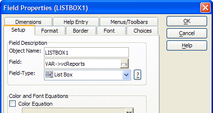

A Conditional Object Example
This topic refers to the AlphaSports sample database provided with Alpha Five.
Overview
A conditional object is a multi-level rectangular frame used to conditionally display and hide groups of objects. Conditional objects behave like tabbed subforms, except that instead of tabs, the object has multiple layers, which appear and disappear based on the expressions you enter. A layer appears when its expression evaluates to TRUE. If no expression evaluates to true, the default layer appears.
The COND1 layers that become visible or invisible depending on the value of the variable vcLayoutType, which you can set by clicking the selected button or radio button.
Procedure: Creating the Form's Variables
The COND1 conditional object assumes that the developer has created the necessary form variables:
In the Form Editor toolbar click
 .
.Create the vcReports, vcLetters, and vcLabels variables as Level "Layout" and type "Character".
Enter the variables' initial values of "Customer List", "Letter to Customers", and "Customer Labels". These values match entries in Listbox1, Listbox2, and Listbox3 and provide valid default selections.
Create the vcLayoutType variables as Level "Session" and type "Character".
Enter the default value of "Reports" for vcLayoutType. This value matches a value in the Dropdown1 list box and provides a valid default selection.
Click the OK button to return to the Form Editor.
Procedure: Creating the Controlling Radio Buttons
Select the Radio Button tool and sketch a box large enough to contain 3 radio buttons.
In the Field Select dialog select "Var" from the Table list and "vcLayoutType" from the Available Fields list, then click OK.
Right click the radio button control and select Properties....
Display the Choices tab.
In the Choices for control list select "User Defined".
Enter "Labels", "Letters", and "Reports" into the large text box, then click OK.
Procedure: Creating the Controlling Buttons
Select the Button tool and sketch a button on the form.
Set the button label to "Labels".
Click Next >.
Enter the following code and click Finish.
|
vcLayoutType = "Labels" topparent:cond1.refresh() |
Create a second button, setting the label to "Letters", copying the above code, but setting vcLayoutType equal to "Letters".
Create a third button, setting the label to "Reports", copying the above code, but setting vcLayoutType equal to "Reports".
Procedure: Creating the COND1 Conditional Object
The following procedure assumes that the developer has opened the form in the Form Editor. Follow these instructions to create a conditional object similar to COND1 :
Select the conditional object tool on the Toolbar.
Sketch the object's dimensions on the form.
Right click on the object and select Properties....
Enter the expression Var->vcLayoutType = "Reports" into the Condition Expression field.
Enter "Reports" into the Label field.
Click "
". Enter the expression Var->vcLayoutType = "Labels" into the Condition Expression field.
Enter "Labels" into the Label field.
Click "
". Enter the expression Var->vcLayoutType = "Letters" into the Condition Expression field.
Enter "Letters" into the Label field.
Click the OK button to return to the Form Editor.
Right click the conditional object to display the following menu.
Place a list box on the conditional object.
On the Setup tab of the Field Properties dialog box, select "VAR->vcReports" in the Field list.
Click the Choices tab.
Select "Computed Automatically" from the Choices for control are list.
Select "Report Layouts" in the Source list.
Click the OK button to return to the Form Editor.
Right click the conditional object.
Select "Letters" to display the Letters layer.
Place a list box on the page.
On the Setup tab of the Field Properties dialog box, select "VAR->vcLetters" in the Field list.
Click the Choices tab.
Select "Computed Automatically" from the Choices for control are list.
Select "Letter Layouts" in the Source list.
Click the OK button to return to the Form Editor.
Right click the conditional object.
Select "Labels" to display the Labels layer.
Place a list box on the page.
On the Setup tab of the Field Properties dialog box, select "VAR->vcLabels" in the Field list.
Click the Choices tab.
Select "Computed Automatically" from the Choices for control are list.
Select "Label Layouts" in the Source list.
Click the OK button to return to the Form Editor.
Click the various radio buttons to display different layers of the conditional object.
